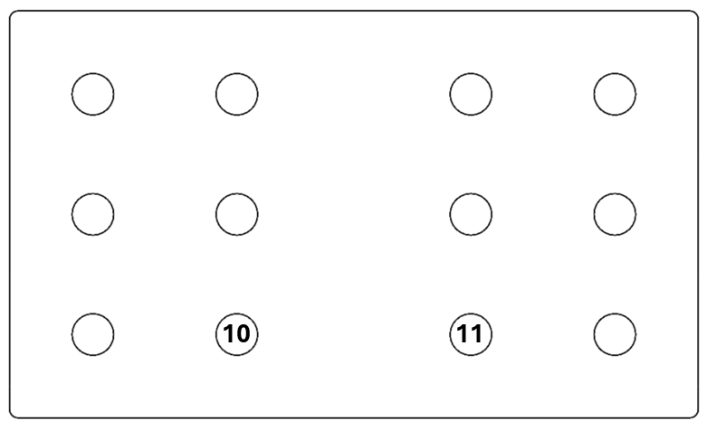
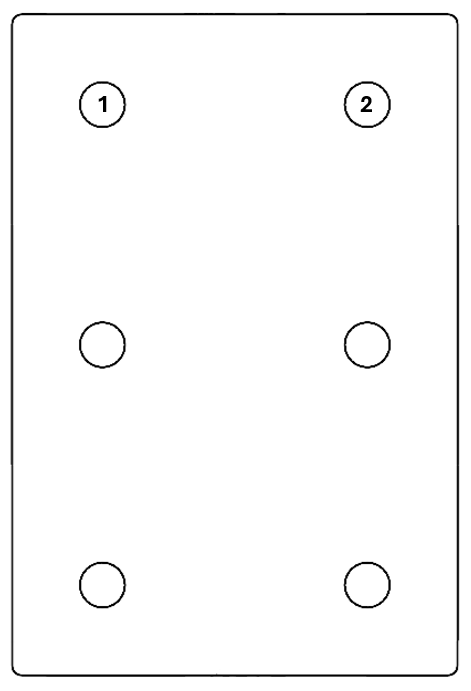

Hinge Bracket
Design of the hinge bracket assembly which connects the aileron to the wing.
Hinge bracket assembly is based on similar designs used in connecting control surfaces in small aircraft. Since the both inboard and outboard assemblies experience the approximately similar forces, only the inboard (smaller) assembly was designed and analyzed as it represents the critical design case.
For the material of the brackets Aluminum 2024-T3 alloy was chosen. Parts are to be coated with either phenolic resin, paints or special coatings to prevent galvanic corrosion. HSTM20 pins connect the brackets to the wing and aileron spars, while HSTM10 HI-LITE pins connect the brackets themselves. Per the manufacturer's catalogue, all pins are made from 6Al-4V Titanium alloy.
Thicknesses of the parts were analyzed through several iterations until the maximum von Mises stress dropped below 246 MPa which represents the safety factor of 1.5. Wing bracket has a thickness of 3 mm while aileron bracket has thickness of 2 mm. Dimensions of the brackets were defined by the dimensions of the surrounding parts, spar webs more precisely. Total height of the spar webs at the location of the outboard hinge bracket was 72.75 mm. Wing hinge bracket was designed to be ~33% shorter to acommodate the space for the actuator arm extending below it to connect to aileron bracket.
In the numerical model, a reference point was defined at the center of each hole and was coupled to the hole surface using distributed coupling. Boundary conditions used were pins in the connecting areas while the hole representing the connection of the two brackets had biaxial force defined. Hole in the aileron bracket, to which the actuator is connected was pinned. Two force cases were obtained using hand calculations, one set for downwards deflection of 17°, and one for upwards deflection of 30°. Hinge force calculated in the Aerodynamics chapter for the case of 30° deflection was scaled linearly for the 17° deflection case and is equal to 747.4 N.
Running the analysis cases shows both of the brackets stand well within the set boundaries with maximum Mises stress appearing on the wing bracket for the 30° deflection case (244.3 MPa). Highest Mises stress on the aileron bracket occurs at 30° deflection (54.93 MPa).
Maximum displacements
Maximum Mises stresses

Wing bracket maximum displacement - Left: 30° up; Right: 17° down

Aileron bracket maximum displacement - Left: 30° up; Right: 17° down

Wing bracket Mises stresses - Left: 30° up; Right: 17° down

Aileron bracket Mises stresses - Left: 30° up; Right: 17° down
Tensile and shear stresses acting upon the pins were calculated by measuring reaction forces for each reference point. Maximum tensile forces in wing bracket were identified for pins in locations 10 and 11 (diference in forces was less than 1 N), while maximum tensile forces in aileron bracket were identified for pins in locations 1 and 2 (delta was also less than 1 N.). These pin locations also exhibited maximum shear forces for both the wing and aileron bracket. Tensile and shear stresses were then calculated and are present in the table below.
Wing bracket pin locations for maximum stresses
Aileron bracket pin locations for maximum stresses
Maximum allowable shear stress for the pins per the manufacturer is 95 ksi which translates to 655 MPa.
Maximum tensile and shear pin stresses

Wing bracket

Aileron bracket

Hinge bracket in 30° upwards deflection

Hinge bracket in 17° downwards deflection